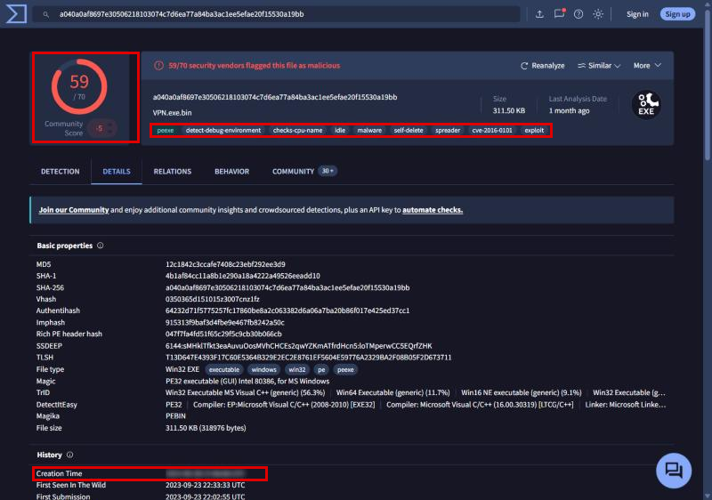
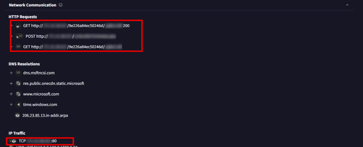
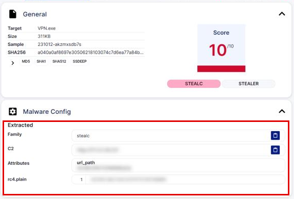
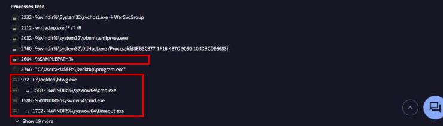

Oski
- Lab: Oski trên CyberDefenders. Nhóm Threat Intel, độ khó Easy, đã retired.
- Dữ liệu: file
hash.txtchứa MD512c1842c3ccafe7408c23ebf292ee3d9. Mẫu là một infostealer (mã độc đánh cắp thông tin) thuộc họ Stealc, dòng phát triển từ Oski. - Công cụ: VirusTotal (tab Details, Behavior), Recorded Future Triage (Tria.ge, sandbox có trích xuất cấu hình mã độc). Danh sách của lab còn có ANY.RUN.
- Quy ước:
- Ảnh là ảnh chụp trang VirusTotal và Tria.ge của đúng mẫu này, chụp ngày 04/11/2026.
- Khung đỏ đánh dấu chỗ cần chú ý. Vùng làm mờ là đáp án của câu hỏi (thời điểm tạo, IP, URL C2, tên DLL, khóa RC4).
Tóm tắt kết quả
- MD5 của lab ứng với file PE 32-bit
VPN.exe(311,50 KB, SHA-256a040a0af...530a19bb), biên dịch bằng Visual C++ 2010. VirusTotal ghi nhận 59/70 engine phát hiện. - Trong sandbox, mẫu gửi HTTP POST tới một file
.phpcó tên là chuỗi hex, đặt thẳng trên một IP public. Nó cũng tải một DLL từ cùng IP đó. - Tria.ge trích được cấu hình: family
stealc, địa chỉ C2, đường dẫn.phpvà khóa RC4 dùng để giải mã chuỗi. - Cây tiến trình có
cmd.exesinh ratimeout.exe, khớp với tagself-deletecủa VirusTotal: mẫu chờ vài giây rồi tự xóa.
Bước 1: thông tin file và thời điểm tạo
- Mục tiêu: biết mẫu là file gì và được biên dịch khi nào.
- Cách làm: tra MD5 trên VirusTotal, mở tab Details, xem Basic properties và History.

- Nhận định:
- Creation Time trên VirusTotal lấy từ trường Compilation Timestamp trong PE header (hai giá trị trùng nhau ở mẫu này).
- Timestamp do trình biên dịch ghi, kẻ tấn công có thể sửa. Chỉ nên coi là dấu hiệu tham khảo.
- Mẫu được gửi lên VirusTotal lần đầu ngày 23/09/2023 (22:02:55 UTC), gần 1 năm sau timestamp biên dịch.
- Hướng giải: dòng Creation Time đã làm mờ, ghi theo định dạng
YYYY-MM-DD HH:MM.
Bước 2: máy chủ C2 và thư viện được tải
- Mục tiêu: xác định nơi mẫu gửi dữ liệu và những gì nó tải về.
- Cách làm: mở tab Behavior, xem mục Network Communication, phần HTTP Requests.

- Nhận định:
- Request POST tới file
.phpcó tên là chuỗi hex là cổng nhận dữ liệu bị đánh cắp. - Mẫu kết nối thẳng tới IP qua HTTP cổng 80, không qua tên miền. Chặn theo DNS sẽ không có tác dụng.
- Mẫu không mang sẵn thư viện đọc database của trình duyệt. Nó tải DLL hợp lệ từ C2 về khi cần, nên file ban đầu nhỏ và ít bị phát hiện hơn.
- Hướng giải: URL C2 là URL đầy đủ của request POST. Thư viện đầu tiên được tải là tên file trong request GET đầu tiên.
Bước 3: khóa giải mã chuỗi
- Mục tiêu: lấy khóa mẫu dùng để giải mã chuỗi Base64.
- Cách làm: tìm SHA-256 trên Tria.ge, mở một báo cáo của mẫu (ví dụ
231012-akzmxsdb7s), xem mục Malware Config.

- Nhận định:
- C2 và
url_pathtrên Tria.ge khớp với IP và file.phpthấy ở Bước 2. Hai nguồn độc lập cho cùng một kết quả. - Chuỗi cấu hình được mã hóa RC4 (thuật toán mã hóa đối xứng) rồi Base64. Có khóa thì giải mã được toàn bộ chuỗi trong mẫu.
- Hướng giải: khóa là dãy chữ số ở dòng
rc4.plain.
Bước 4: kỹ thuật MITRE ATT&CK
- Mục tiêu: xác định kỹ thuật chính mẫu dùng để lấy mật khẩu.
- Cách làm: mở bảng MITRE ATT&CK trong báo cáo sandbox (Tria.ge hoặc ANY.RUN), xem các kỹ thuật thuộc tactic Credential Access.
- Nhận định:
- Stealc lấy mật khẩu từ nơi lưu trữ của trình duyệt. Thư viện DLL tải ở Bước 2 dùng để đọc các database này.
- Lab hỏi technique chính, không phải sub-technique. ID của sub-technique có thêm phần
.xxxphía sau. - Hướng giải: ID technique cha của hành vi đọc mật khẩu trình duyệt trong bảng ATT&CK.
Bước 5: dọn dấu vết và tự xóa
- Mục tiêu: hiểu mẫu làm gì sau khi gửi dữ liệu.
- Cách làm: trong tab Behavior của VirusTotal, xem mục Processes Tree.

- Nhận định:
cmd.exegọitimeout.exeđể chờ một khoảng ngắn, rồi xóa file thực thi khi tiến trình mẫu đã thoát. Đây là lý do VirusTotal gắn tagself-delete.- VirusTotal chỉ hiện tên tiến trình, không hiện command line của
cmd.exe. - Hướng giải: thư mục bị xóa DLL và số giây chờ nằm trong command line của tiến trình
cmd.exe. Xem trong báo cáo ANY.RUN hoặc tab Behavior của Tria.ge, nơi có ghi command line.